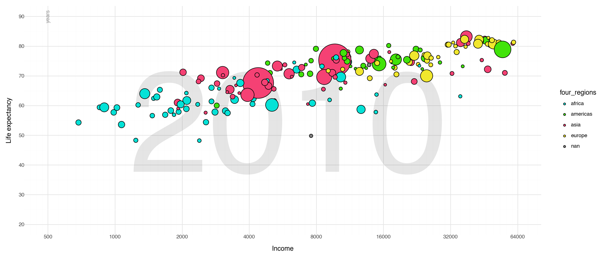
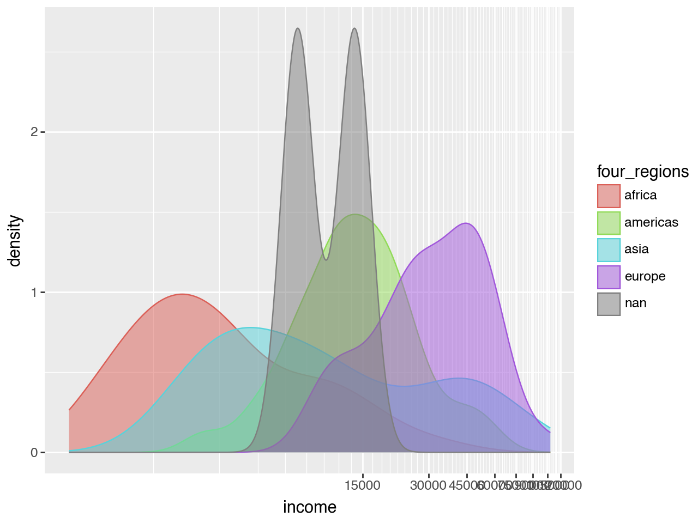
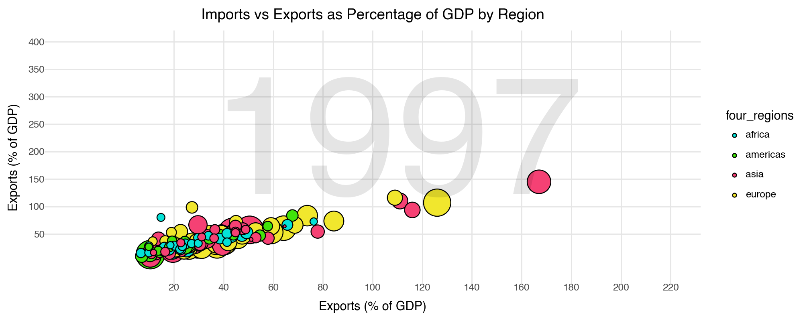
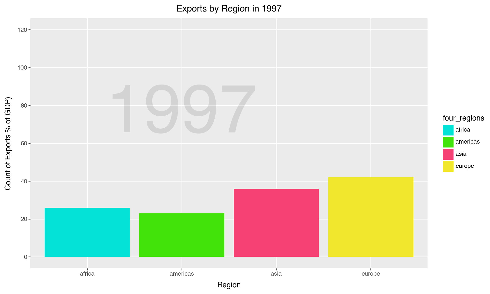
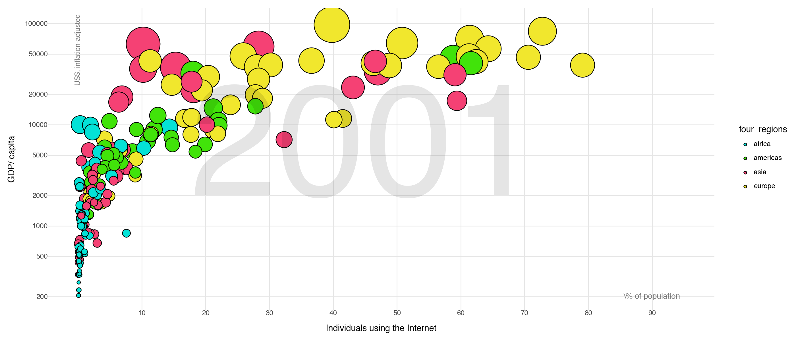
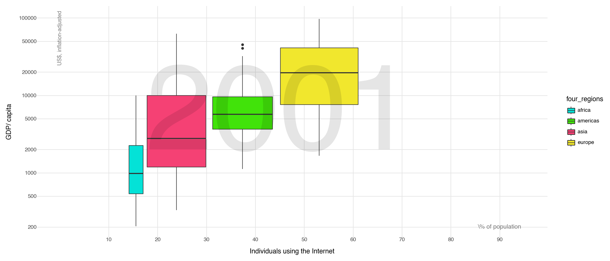

import numpy as np
import pandas as pd
from plotnine import *Task 1 1. The aesthetics are: x = income, y= life expectancy. The geometry used is a scatter plot with geom_point(). The bubble size represents population size. The color =shows world region. The data is from 2010, (this changes with the interactive graph.)
region_colors = {
'africa': '#04e2d7',
'americas': '#41e30a',
'asia': '#f54174',
'europe': '#f1e72d'
}#2
q1= pd.read_csv("/Users/alexandra/Desktop/GSB-544/Labs/Lab1/Data_Lab1/q1data (1).csv")
#3
(ggplot(q1,
aes(x = "income",
y = "life_exp",
size = "population",
fill= "four_regions"
))
+annotate("text", x=6000, y =50, label="2010", size=240, color = "black", alpha=0.1)
+annotate("text", x=500, y=90, label="years", size = 9, color= "black", alpha = .4, angle=90)
+annotate("text", x=400, y =60, label="Income Level 1 * Level 2 * Level 3 * Level 4 ", size=10, color = "black", alpha=0.3)
+guides(size=False)
+ geom_point()
+ ylab("Life expectancy")
+ xlab("Income")
+theme_minimal()
+ theme(figure_size=(14, 6))
#+ theme((figure_size =(14,6), panel_grid_minor = element_blank()))
+scale_fill_manual(values=region_colors)
+scale_x_log10(breaks=[ 500,1000,2000,4000,8000,16000,32000,64000], limits = (500,64000),
lables= ['1000','2000',"4000",'8000', '16k', '32k', '64k']
)
+scale_y_continuous(breaks=[20,30,40,50,60,70,80,90], limits = (20,90))
+scale_size(range=(2,30))
)/Library/Frameworks/Python.framework/Versions/3.11/lib/python3.11/site-packages/plotnine/scales/scale.py:130: PlotnineWarning: scale_x_log10 could not recognise parameter `lables`
/Library/Frameworks/Python.framework/Versions/3.11/lib/python3.11/site-packages/plotnine/layer.py:364: PlotnineWarning: geom_text : Removed 1 rows containing missing values.
/Library/Frameworks/Python.framework/Versions/3.11/lib/python3.11/site-packages/plotnine/layer.py:364: PlotnineWarning: geom_point : Removed 11 rows containing missing values.
#4 Making a density plot
(ggplot(q1,
aes(x = "income",
size = "population",
color = "four_regions",
fill="four_regions"
))
+ geom_density(alpha=0.5)
+scale_x_log10(breaks=[0,15000,30000,45000, 60000,75000, 90000,105000,120000])
)
#I created a density plot. It is not representative for the y variable, life expectancy. The graph is hard to read and the y axis not representative of meaningful information because it only shows whatever number would be needed for the area under each curve to be equal to 1. /Library/Frameworks/Python.framework/Versions/3.11/lib/python3.11/site-packages/plotnine/layer.py:284: PlotnineWarning: stat_density : Removed 2 rows containing non-finite values.
/Library/Frameworks/Python.framework/Versions/3.11/lib/python3.11/site-packages/plotnine/scales/scale_continuous.py:221: RuntimeWarning: divide by zero encountered in log10
A density plot is not a good representation of the catergical variables. It is hard to visualize what exactly we learn from this graph and why there might be a bimodal curve for "nan". This graph also completely leaves out the variable life expectancy.Task 2 1. The aesthetics are: x= exports of GDP , y= imports of GDP. The geometry used is a scatter plot with geom_point(). The bubble size represents energy use. The color =shows world region. The data is from 1997, (this changes with the interactive graph.)
#2
q2= pd.read_csv("/Users/alexandra/Desktop/GSB-544/Labs/Lab1/Data_Lab1/q2data.csv")region_colors = {
'africa': '#04e2d7',
'americas': '#41e30a',
'asia': '#f54174',
'europe': '#f1e72d'
}q2.head
#remove the k thousands numbers
q2['energy']= q2['energy'].str.replace('k','').astype(float) *1000
q2['energy']= q2['energy'].astype(float)#3
q2 = q2.sort_values(by='energy', ascending=False)
q2= q2.dropna()
(ggplot(q2,
aes(x = "exports",
y = "imports",
size = "energy",
fill= "four_regions"
))
+ geom_point(alpha=1)
+theme_minimal()
+ theme(figure_size = (10,4), panel_grid_minor = element_blank())
+scale_fill_manual(values=region_colors)
+annotate("text", x=110, y =200, label="1997", size=150, color = "black", alpha=0.1)
+ xlab("Exports (% of GDP)")
+ ylab("Exports (% of GDP)")
+guides(size=False)
+scale_x_continuous(breaks=[20,40,60,80,100,120,140,160, 180, 200,220], limits = (-20,220)
)
+scale_y_continuous(breaks=[50,100,150,200,250,300,350,400], limits = (-20,400))
+scale_size(range=(1,15))
+labs(title = 'Imports vs Exports as Percentage of GDP by Region', size='Energy Use', color='Region')
)
Creating a new bar plot using the categorical variable ” four_regions_ which shows world region the data represents against its counts.This means the number of countries %GDP in the data, in each region.
#4
q2["four_regions"] = q2["four_regions"].astype(str)
q2 = q2.dropna()
(ggplot(q2,
aes(x="four_regions",
fill="four_regions"))
+ geom_bar()
+ theme(figure_size=(10, 6), panel_grid_minor=element_blank())
+ scale_fill_manual(values=region_colors)
+ xlab("Region")
+ ylab("Count of Exports % of GDP)")
+ annotate("text", x=2, y=75, label="1997", size=100, color="black", alpha=0.1)
+ scale_y_continuous(breaks=[0, 20, 40, 60, 80, 100, 120], limits=(0, 120))
+ labs(title='Exports by Region in 1997')
)
q2.dtypesimports float64
exports float64
energy float64
year int64
country object
four_regions object
six_regions object
eight_regions object
world_bank_region object
dtype: objectIt is easy to visulaize by region which has the highest export % of GDP. However the barplot completely leaves out Import % of GDP. this information also is not the most onteresting and does not really show us a picture of what is going on with the data.
Task 3 1. The aesthetics are: x= Individual Internet Users , y= GDP/capita, The geometry used is a scatter plot with geom_point(). The bubble size represents income. The color =shows world region. The data is from 2001, (this changes with the interactive graph.). **I used chat gpt help me learn how to adjust the scale of the grapgh to make it represent that data better, and more like the original graph.
#2
q3= pd.read_csv("/Users/alexandra/Desktop/GSB-544/Labs/Lab1/Data_Lab1/q3data.csv")
q3 = q3.sort_values(by='income', ascending=False)
q3= q3.dropna()
(ggplot(q3,
aes(
x='internet_users',
y='gdp',
size='income',
fill='four_regions'
))
+ geom_point()
+ scale_size(range=(2, 25))
+ guides(size='none')
#labels in corners
+ labs(x="Individuals using the Internet", y="GDP/ capita")
+ guides(size='none')
+ annotate("text", x=120, y=200, label="2001", size=200, color="black", alpha=.1)
+theme_minimal()
+ theme(figure_size=(14,6), panel_grid_minor=element_blank())
+ scale_fill_manual(values=region_colors)
+ scale_x_continuous(breaks=[10,20,30,40,50,60,70,80,90], limits=(0, 95))
+ scale_y_log10(breaks=[200, 500, 1000, 2000, 5000, 10000, 20000, 50000, 100000], limits=(200, 104000))
+ annotate("text", x=90, y=200, label="\% of population", size=10, color="black", alpha=.5)
+ annotate("text", x=0, y=55000, label="US$, inflation-adjusted", size=9, color="black", angle=90, alpha=.5)
+ annotate("text", x=45, y=5000, label="2001", size=200, color="black", alpha=.1)
)/Library/Frameworks/Python.framework/Versions/3.11/lib/python3.11/site-packages/plotnine/layer.py:364: PlotnineWarning: geom_point : Removed 1 rows containing missing values.
/Library/Frameworks/Python.framework/Versions/3.11/lib/python3.11/site-packages/plotnine/layer.py:364: PlotnineWarning: geom_text : Removed 1 rows containing missing values.
q3.dtypesinternet_users float64
gdp float64
income float64
year int64
country object
four_regions object
six_regions object
eight_regions object
world_bank_region object
dtype: object4 Making a boxplot to represent internet users compared to GDP.
q3 = q3.sort_values(by='income', ascending=False)
q3= q3.dropna()
(ggplot(q3,
aes(
x='internet_users',
y='gdp',
size='income',
fill='four_regions'
))
+ geom_boxplot()
+ scale_size(range=(2, 25))
+ guides(size='none')
#labels in corners
+ labs(x="Individuals using the Internet", y="GDP/ capita")
+ guides(size='none')
+ annotate("text", x=120, y=200, label="2001", size=200, color="black", alpha=.1)
+theme_minimal()
+ theme(figure_size=(14,6), panel_grid_minor=element_blank())
+ scale_fill_manual(values=region_colors)
+ scale_x_continuous(breaks=[10,20,30,40,50,60,70,80,90], limits=(0, 95))
+ scale_y_log10(breaks=[200, 500, 1000, 2000, 5000, 10000, 20000, 50000, 100000], limits=(200, 104000))
+ annotate("text", x=90, y=200, label="\% of population", size=10, color="black", alpha=.5)
+ annotate("text", x=0, y=55000, label="US$, inflation-adjusted", size=9, color="black", angle=90, alpha=.5)
+ annotate("text", x=45, y=5000, label="2001", size=200, color="black", alpha=.1)
)/Library/Frameworks/Python.framework/Versions/3.11/lib/python3.11/site-packages/plotnine/layer.py:284: PlotnineWarning: stat_boxplot : Removed 1 rows containing non-finite values.
/Library/Frameworks/Python.framework/Versions/3.11/lib/python3.11/site-packages/plotnine/layer.py:364: PlotnineWarning: geom_text : Removed 1 rows containing missing values.
Boxplot shows a more summarized version of the data. The scatter plot shows individual points. The boxplot shows data through the width and lenght of the plot. It is harder to interpret a boxplot. A box plot does make it to visualize the means of each country and their GDP/captia which is useful in seeing which is higher/ lower quickly. The width of the bins shows the maount of data which is also good to take into account.